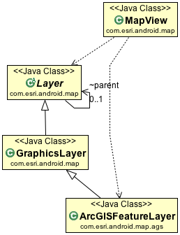

| ArcGISDynamicMapServiceLayer | The ArcGISDynamicMapServiceLayer class allows you to work with a dynamic map service resource that is exposed by the ArcGIS Server REST API (see the system requirements document for supported versions of ArcGIS Server). |
| ArcGISFeatureLayer | 
ArcGISFeatureLayer is a special type of GraphicsLayer that allows you to display, select, query, and filter
features in a layer hosted by an ArcGIS for Server map service or feature service. |
| ArcGISFeatureLayer.EditCapabilities | Feature edit capabilities. |
| ArcGISFeatureLayer.Options | The options to instantiate the feature layer. |
| ArcGISImageServiceLayer | The ArcGISImageServiceLayer class allows you to work with an image service resource that is exposed by the ArcGIS Server REST API (see the system requirements document for supported versions of ArcGIS Server). |
| ArcGISLayerInfo | While working with the ArcGISDynamicMapServiceLayer and ArcGISTiledMapServiceLayer class, it is possible for you to access the individual layers contained within the dynamic map service through the getLayers() method. |
| ArcGISLocalTiledLayer | The ArcGISLocalTiledLayer class is a type of tiled layer where the data is stored locally on the device, therefore this layer can function even when the device does not have any network connectivity. |
| ArcGISPopupInfo | Popup information extension including ArcGIS layer information |
| ArcGISTiledMapServiceLayer | The ArcGISTiledMapServiceLayer class allows you to work with a cached map service resource exposed by the ArcGIS Server REST API. |
| ArcGISFeatureLayer.MODE | The feature layer can work under 3 modes. |
| ArcGISFeatureLayer.SELECTION_METHOD | The modes used for the select features method. |